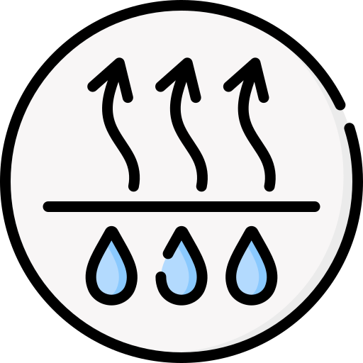

Estación meteorológica


La humedad es la cantidad de vapor de agua que hay en el aire.
Humedad
Temperatura
Humedad
Temperatura acuatica
Tiempo
Arduino mega 2560, Arduino UNO, Protoboard, Pantallas lcd-IC2, Sensor de temperatura DHT11, Sensor de temperatura DS18B20, cables dupont.
InformaciónEste proyecto esta orientado a una estación meteorológica tipo A. Mide temperatura atmosferica, humedad relativa y temperatura acuatica